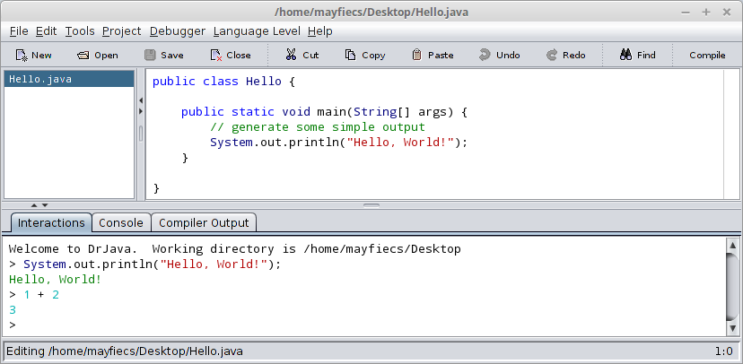
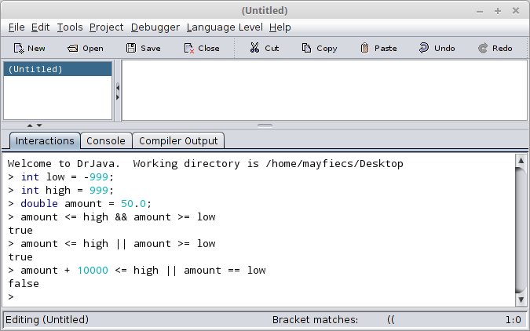
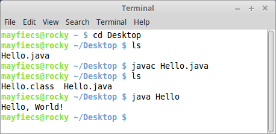
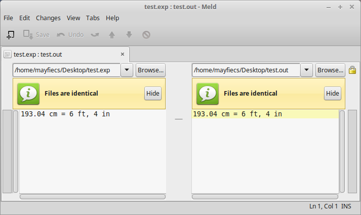
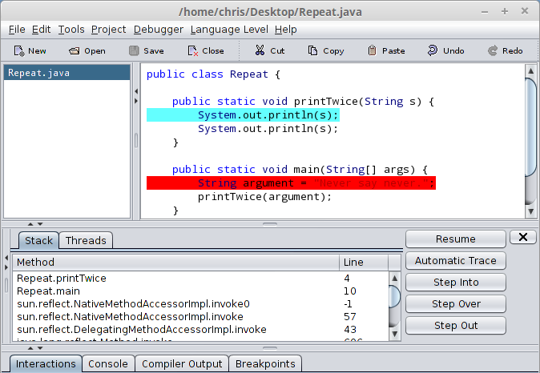

Notices
This is the free HTML version of
We are working on making this site accessible in compliance with Web Content Accessibility Guidelines. If you have suggestions for improvements, please file an issue.
Are you using one of our books in a class? We'd like to know about it. Please consider filling out this short survey.
18 Tools
The steps for compiling, running, and debugging Java code depend on your development environment and operating system. We avoided putting these details in the main text, because they can be distracting.
Instead, we provide this appendix with a brief introduction to DrJava—an integrated development environment (IDE) that is helpful for beginners—and other development tools, including Checkstyle for code quality and JUnit for testing.
18.1 Installing DrJava
The easiest way to start programming in Java is to use a website that compiles and runs Java code in the browser. Examples include https://repl.it/, https://trinket.io/, https://jdoodle.com/, and others.
If you are unable to install software on your computer (which is often the case in public schools and Internet cafés), you can use these online development environments for almost everything in this book.
But if you want to compile and run Java programs on your own computer, you will need the following:
The Java Development Kit (JDK), which includes the compiler, the Java Virtual Machine (JVM) that interprets the compiled byte code, and other tools such as Javadoc.
A text editor such as Atom, Notepad++, or Sublime Text, and/or an IDE such as DrJava, Eclipse, jGrasp, or NetBeans.
The JDK we recommend is OpenJDK, an open source implementation of Java SE (Standard Edition). The IDE we recommend is DrJava, which is an open source development environment written in Java (see Figure 18.1).
To install OpenJDK, visit https://adoptopenjdk.net. Download and run the installer for your operating system.
To install DrJava, visit http://drjava.org/ and download the JAR file. We recommend that you save it to your Desktop folder or another convenient location. Simply double-click the JAR file to run DrJava. Refer to the DrJava documentation (http://drjava.org/docs/quickstart/) for more details.

When running DrJava for the first time, we recommend you change three settings from the Edit \(>\) Preferences menu under Miscellaneous: set the Indent Level to 4, check the Automatically Close Block Comments box, and uncheck the Keep Emacs-style Backup Files box.
18.2 DrJava Interactions
One of the most useful features of DrJava is the “Interactions” pane at the bottom of the window. It provides the ability to try out code quickly, without having to write a class definition and save/compile/run the program. Figure 18.2 shows an example.

There is one subtle detail to note when using the Interactions pane. If you don’t end an expression (or statement) with a semicolon, DrJava automatically displays its value. Notice in Figure 18.2 that the variable declarations end with semicolons, but the logic expressions in the following lines do not. This feature saves you from having to type System.out.println every time.
What’s nice about this feature is that you don’t have to create a new class, declare a main method, write arbitrary expressions inside System.out.println statements, save the source file, and get all of your code to compile in advance. Also, you can press the up/down arrows on the keyboard to repeat previous commands and experiment with incremental differences.
18.3 Command-Line Interface
One of the most powerful and useful skills you can learn is how to use the command-line interface, also called the “terminal”. The command line is a direct interface to the operating system. It allows you to run programs, manage files and directories, and monitor system resources. Many advanced tools, both for software development and general-purpose computing, are available only at the command line.
Many good tutorials are available online for learning the command line for your operating system; just search the web for “command line tutorial”. On Unix systems like Linux and macOS, you can get started with just four commands: change the working directory (cd), list directory contents (ls), compile Java programs (javac), and run Java programs (java).
Figure 18.3 shows an example in which the Hello.java source file is stored in the Desktop directory. After changing to that location and listing the files, we use the javac command to compile Hello.java. Running ls again, we see that the compiler generated a new file, Hello.class, which contains the byte code. We run the program by using the java command, which displays the output on the following line.

Note that the javac command requires a filename (or multiple source files separated by spaces), whereas the java command requires a single class name. If you use DrJava, it runs these commands for you behind the scenes and displays the output in the Interactions pane.
Taking time to learn this efficient and elegant way of interacting with the operating system will make you more productive. People who don’t use the command line don’t know what they’re missing.
18.4 Command-Line Testing
As described in Section 1.9, it’s more effective to program and debug your code little by little than to attempt writing everything all at once. And after you’ve completed programming an algorithm, it’s important to test that it works correctly on a variety of inputs.
Throughout the book, we illustrate techniques for testing your programs. Most, if not all, testing is based on a simple idea: does the program do what we expect it to do? For simple programs, it’s not difficult to run them several times and see what happens. But at some point, you will get tired of typing the same test cases over and over.
We can automate the process of entering input and comparing expected output with actual output using the command line. The basic idea is to store the test cases in plain text files and trick Java into thinking they are coming from the keyboard. Here are step-by-step instructions:
Make sure you can compile and run the Convert.java example in the ch03 directory of ThinkJavaCode2. (See page for instructions on how to download the repository.)
In the same directory as Convert.java, create a plain text file named test.in (“in” is for “input”). Enter the following line and save the file:
193.04Create a second plain text file named test.exp (“exp” is for “expected”). Enter the following line and save the file:
193.04 cm = 6 ft, 4 inOpen a terminal, and change to the directory with these files. Run the following command to test the program:
java Convert < test.in > test.out
On the command line, < and > are redirection operators. The first one redirects the contents of test.in to System.in, as if it were entered from the keyboard. The second one redirects the contents of System.out to a new file test.out, much like a screen capture. In other words, the test.out file contains the output of your program.
By the way, it’s perfectly okay to compile your programs in DrJava (or another environment) and run them from the command line. Knowing both techniques allows you to use the right tool for the job.

meld to compare expected output with the actual output.
At this point, we just need to compare the contents test.out with test.exp. If the files are the same, then the program outputted what we expected it to output. If not, then we found a bug, and we can use the output to begin debugging our program. Fortunately, there’s a simple way to compare files on the command line:
diff test.exp test.outThe diff utility summarizes the differences between two files. If there are no differences, it displays nothing, which in our case is what we want. If the expected output differs from the actual output, we need to continue debugging. Usually, the program is at fault, and diff provides some insight about what is broken. But there’s also a chance that we have a correct program and the expected output is wrong.
Interpreting the results from diff can be confusing, but fortunately many graphical tools can show the differences between two files. For example, on Windows you can install WinMerge, on macOS you can use opendiff (which comes with Xcode), and on Linux there’s meld, shown in Figure 18.4.
Regardless of what tool you use, the goal is the same. Debug your program until the actual output is identical to the expected output.
18.5 Running Checkstyle
Checkstyle is a command-line tool that can be used to determine if your source code follows a set of style rules. It also checks for common programming mistakes, such as class and method design problems.
You can download the latest version as a JAR file from https://checkstyle.sourceforge.io/. To run Checkstyle, move (or copy) the JAR file to the same directory as your program. Open a terminal in that location, and run the following command:
java -jar checkstyle-*-all.jar -c /google_checks.xml *.javaThe characters are wildcards that match whatever version of Checkstyle you have and whatever Java source files are present. The output indicates the file and line number of each problem. This example refers to a method beginning on line 93, column 5 of Hello.java:
Hello.java:93:5: Missing a Javadoc commentThe file /google_checks.xml is inside the JAR file and represents most of Google’s style rules. You can alternatively use /sun_checks.xml or provide your own configuration file. See Checkstyle’s website for more information.
If you apply Checkstyle to your source code often, you will likely internalize good style habits over time. But there are limits to what automatic style checkers can do. In particular, they can’t evaluate the quality of your comments, the meaning of your variable names, or the structure of your algorithms.
Good comments make it easier for experienced developers to identify errors in your code. Good variable names communicate the intent of your program and how the data is organized. And good programs are designed to be efficient and demonstrably correct.
18.6 Tracing with a Debugger
A great way to visualize the flow of execution, including how parameters and arguments work, is to use a debugger. Most debuggers make it possible to do the following:
Set a breakpoint, a line where you want the program to pause.
Step through the code one line at a time and watch what it does.
Check the values of variables and see when and how they change.
For example, open any program in DrJava and move the cursor to the first line of main. Press Ctrl+B to toggle a breakpoint on the current line; it should now be highlighted in red. Press Ctrl+Shift+D to turn on “Debug Mode”; a new pane should appear at the bottom of the window. These commands are also available from the Debugger menu, in case you forget the shortcut keys.
When you run the program, execution pauses at the first breakpoint. The debugging pane displays the call stack, with the current method on top of the stack, as shown in Figure 18.5. You might be surprised to see how many methods were called before the main method!

printTwice. There is a breakpoint on the first line of main.
To the right are several buttons that allow you to step through the code at your own pace. You can also click Automatic Trace to watch DrJava run your code one line at a time.
Using a debugger is like having the computer proofread your code out loud. When the program is paused, you can examine (or even change) the value of any variable by using the Interactions pane.
Tracing allows you to follow the flow of execution and see how data passes from one method to another. You might expect the code do one thing, but then the debugger shows it doing something else. At that moment, you gain insight about what may be wrong with the code.
You can edit your code while debugging it, but we don’t recommend it. If you add or delete multiple lines of code while the program is paused, the results can be confusing.
See http://drjava.org/docs/user/ch09.html for more information about using the debugger feature of DrJava.
18.7 Testing with JUnit
When beginners start writing methods, they usually test them by invoking them from main and checking the results by hand. For example, to test fibonacci from Section [fibonacci], we could write this:
public static void main(String[] args) {
if (fibonacci(1) != 1) {
System.err.println("fibonacci(1) is incorrect");
}
if (fibonacci(2) != 1) {
System.err.println("fibonacci(2) is incorrect");
}
if (fibonacci(3) != 2) {
System.err.println("fibonacci(3) is incorrect");
}
}This test code is self-explanatory, but it’s longer than it needs to be, and it doesn’t scale very well. In addition, the error messages provide limited information. For cases where we know the right answer, we can do better by writing unit tests.
JUnit (https://junit.org/) is a common testing tool for Java programs. To use it, you have to create a test class that contains test methods.
For example, suppose that the fibonacci method belongs to a class named Series. Here is a corresponding JUnit[^2] test class and test method:
import junit.framework.TestCase;
public class SeriesTest extends TestCase {
public void testFibonacci() {
assertEquals(1, Series.fibonacci(1));
assertEquals(1, Series.fibonacci(2));
assertEquals(2, Series.fibonacci(3));
}
}This example uses the keyword extends, which indicates that the new class, SeriesTest, is based on an existing class, TestCase. The TestCase class is imported from the package junit.framework.
The names in this example follow convention: if the name of your class is Something, the name of the test class should be SomethingTest. And if there is a method in Something named someMethod, there should be a method in SomethingTest named testSomeMethod.
Many development environments can generate test classes and test methods automatically. In DrJava, you can select New JUnit Test Case from the File menu to generate an empty test class.
assertEquals is provided by the TestCase class. It takes two arguments and checks whether they are equal. If so, it does nothing; otherwise, it displays a detailed error message. The first argument is the expected value, which we consider correct, and the second argument is the actual value we want to check. If they are not equal, the test fails.
Using assertEquals is more concise than writing your own if statements and System.err messages. JUnit provides additional assert methods, such as assertNull, assertSame, and assertTrue, which can be used to design a variety of tests.
To run JUnit directly from DrJava, click the Test button on the toolbar. If all your test methods pass, you will see a green bar in the lower-right corner. Otherwise, DrJava will take you directly to the first assertion that failed.
18.8 Vocabulary
- IDE:
-
An “integrated development environment” that includes tools for editing, compiling, and debugging programs.
- JDK:
-
The “Java Development Kit”, which contains the compiler, Javadoc, and other tools.
- JVM:
-
The “Java Virtual Machine”, which interprets the compiled byte code.
- text editor:
-
A program that edits plain text files, the format used by most programming languages.
- JAR:
-
A “Java Archive”, which is essentially a ZIP file containing classes and other resources.
- command-line interface:
-
A means of interacting with the computer by issuing commands in the form of successive lines of text.
- redirection operator:
-
A command-line feature that substitutes
System.inand/orSystem.outwith a plain text file. - wildcard:
-
A command-line feature that allows you to specify a pattern of filenames by using the character.
- debugger:
-
A tool that allows you to run one statement at a time and see the contents of variables.
- breakpoint:
-
A line of code at which the debugger will pause a running program.
- call stack:
-
The history of method calls and where to resume execution after each method returns.
- unit test:
-
Code that exercises a single method of a program, testing for correctness and/or efficiency.